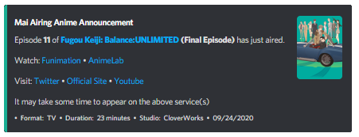
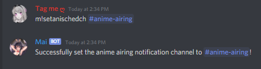
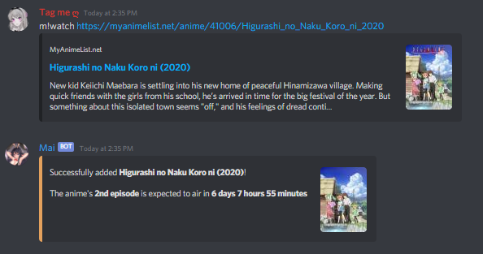
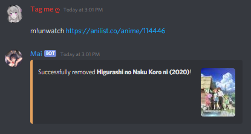

Setting up your server's Anischedule Feature

This is an implementation of TehNut's work Anischedule. If you liked his work, you may contribute to him by going to the Anischedule Project.
A Special Mai Bot Feature that notifies you when a new anime episode has aired
A feature that uses the AniList API to retrieve the airing schedule for configured anime and sends a message when a new episode has aired, like the image below.
Before you start everything, make sure Mai has the necessary Permissions SEND_MESSAGES, EMBED_LINKS so that announcements are sent on a set channel.
1. Use the setanischedch command and pass in the desired announcement channel as the first parameter.

2. Search for currently airing anime you wanted to keep track of, grab the link, use the m!watch command and pass the copied URL as the parameter.
Take note that the only accepted URLs are from MyAnimeList and AniList. Wait for a confirmation from the bot. If the anime is already listed on your server, the anime will not be added, but you will be notified instead that the URL you submitted is already listed. Finished or Cancelled anime series cannot be added, but you can add upcoming anime as long as it has an official entry on AniList.
Adding More to the List
You can add many ongoing anime as you want, without worries! Just use the m!watch [anime URL] command and it will automatically add the anime, no Problem! As mentioned before, you can also add multiple entries at once. Just add the links separated with space. You may also visit the support server to get all the links of ongoing anime.
Removing Anime From the List
You might think that the anime you added is none of your business, or you don't want to hear updates from it anymore because of your own personal reason. Removing anime from your watch-list is easier than you think! Just use m!unwatch [anime URL] command and you're good to go. Providing URL from an unlisted anime will return with an error saying that anime is not listed.
Viewing the watchlist
You added so much anime that you've lost count, and you forgot what those are. Now you start to wonder, how am I gonna view my server's listed anime? Viewing the watchlist is accessible by all members of the server via the command m!watching. This command will return with the list of currently watching anime for the server. Just make sure that [EMBED_LINKS] permission is enabled for the bot on the channel where the command is executed.
F.A.Q.s
• I compared this feature to TehNut's. Where is the next command?
Unfortunately, I did not include it as I don't see it serving any purpose. But i'm still considering it if anyone suggests.
• Are there any plans to have it "User-specific" rather than "Server Specific".
This feature is very hard to implement when Discord API is imposing rate-limits on it's send endpoint. Imagine multiple users are subscribed to that anime, the bot has to send the same number of messages to those users in a short amount of time. Unless Discord loosens its ratelimit rules, I don't see it being implemented in the near future.